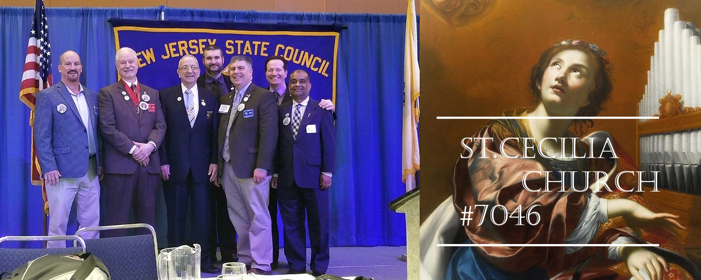

KOFC#7046 is a active member group in St.Cecilia.
Saint Patrick's Day was made an official Christian feast day in the early 17th century and is observed by the Catholic Church
Saint Patrick's Day was made an official Christian feast day in the early 17th century and is observed by the Catholic Church, the Anglican Communion (especially the Church of Ireland),the Eastern Orthodox Church, and the Lutheran Church. The day commemorates Saint Patrick and the arrival of Christianity in Ireland, and celebrates the heritage and culture of the Irish in general.Celebrations generally involve public parades and festivals, céilithe
The universal symbol of the Christian faith, the Holy cross represents Christ's victory over death This praise is clothed in even greater majesty and jubilation when we consider that the cross was originally an instrument of torture used throughout Antiquity, representing ignominy and shame for the person who suffered death by crucifixion. Holy Cross setup by KOFC#7046 to St.Cecilia's church is one of the most imporant event. Our special thanks to the young kids those who support our Knights to setup the Holy Cross.

Our Catholic faith teaches us to “Love thy neighbor as thyself.” There is no better way to experience love and compassion than by helping those in need, a call we answer every day.
None of us is as good as all of us. Members of the Knights of Columbus all know that – together – we can accomplish far more than any of us could individually.
Venerable Michael J. McGivney founded the Knights of Columbus, in large part, to provide assistance to the widows and children left behind when the family breadwinner died – often prematurely.
Members of the Knights of Columbus, be they Americans, Canadians, Mexicans, Cubans, Filipinos, Poles, or Dominicans, are patriotic citizens.